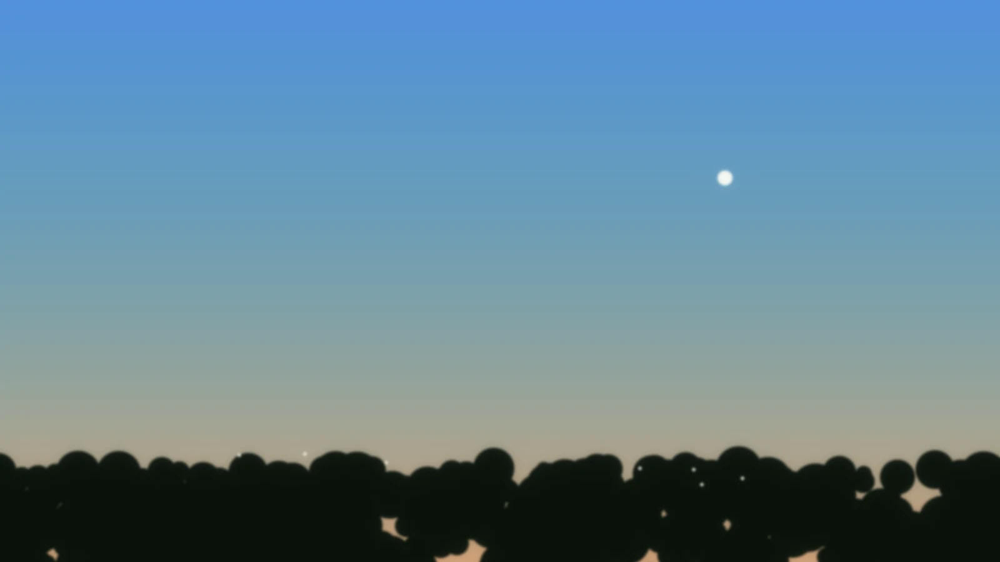
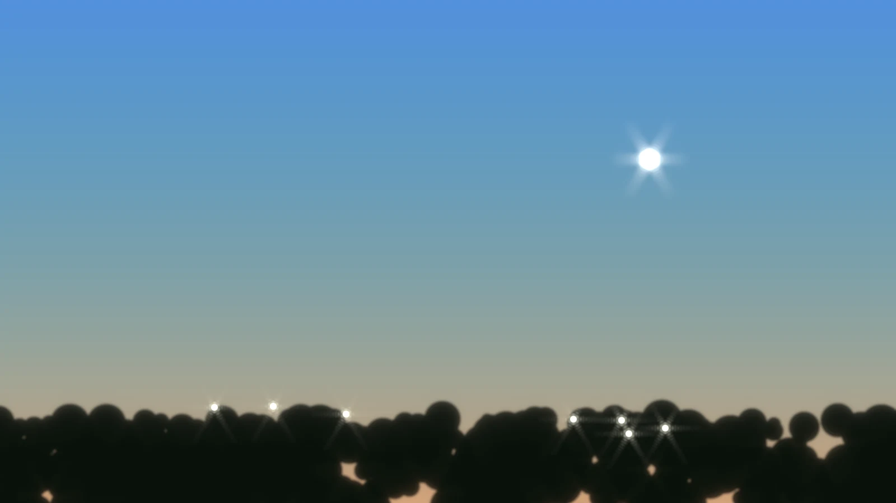

しくみ
目次
1. 点像分布関数
針の先のような光源をレンズで撮っても、光は点になりません。中心に明るい円盤ができて、その周りを薄い輪が囲みます。光がレンズの開口の縁で回り込んで広がるためで、この現象を回折と呼びます。
1点の光が広がる形を表す関数を、点像分布関数と呼びます。円形の開口で収差が無いときの形はエアリーパターンと呼ばれ、明るい円盤の半径は、波長とF値の積の1.22倍になります。デフォルトの波長550nmとF値8では約5.4μm、画素ピッチ4μmなら約1.3画素に当たるため、デフォルトの設定では映像がわずかにやわらぐだけです。

本プラグインは、素材のすべての画素の光をこの形に広げて、足し合わせます。この計算を畳み込みと呼びます。
2. 広がりの形
広がりの形は、開口の形、中央遮蔽、波面のずれで決まります。波長、F値、画素ピッチは、その形が画素に対してどれだけの大きさになるかを決めます。
開口の形
開口が円形なら広がりは輪になりますが、正多角形にすると、辺と垂直な向きに筋が伸びます。この筋を光条と呼びます。
|  |  |
3枚とも、F値16、画素ピッチ2μm、カーネル半径63画素です。線形光をオンにして、ハイライト閾値を90%、強さを300倍にして持ち上げています。
光条の本数は、羽根枚数が偶数なら枚数と同じで、奇数なら2倍です。偶数の正多角形には向かい合う平行な辺があり、2つの辺の光条が同じ向きに重なります。奇数の正多角形には平行な辺が無いので、辺ごとに表と裏の2本ができます。点像分布関数を計算して数えた結果が次の表です。
| 羽根枚数 | 光条の本数 |
|---|---|
| 3 | 6 |
| 4 | 4 |
| 5 | 10 |
| 6 | 6 |
| 7 | 14 |
| 8 | 8 |
枚数を増やすと光条は弱くなり、円形の開口に近づきます。開口回転が0°のとき、4枚の光条は上下左右の十字になり、6枚の光条は0°、60°、120°の向きに伸びます。開口回転は、光条の向きを決める項目です。
中央遮蔽

反射望遠鏡の副鏡のように開口の中央を円でふさぐと、中心の明るさが下がり、下がった分の光は周りの輪へ移ります。上の円形の画像より、この画像のほうが輪がはっきりしています。中央遮蔽は、開口の半径に対する割合で指定します。円形でも正多角形でも、ふさぐのは中央の円です。
波面のずれ
光の波の山をつないだ面を波面と呼び、波面が理想の形からずれることを波面収差と呼びます。本プラグインでは、ゼルニケ多項式の6つの項で波面のずれを指定します。単位のwavesは、波長を1とした量です。
 |  |  |
3枚とも、F値8、画素ピッチ2μm、カーネル半径63画素で、品質は標準です。ハイライト閾値は90%、強さは100倍です。128×128画素の範囲を滑らかに拡大しています。
| 項目 | 見え方 |
|---|---|
| デフォーカス | 輪の入った円盤に広がります。大きくすると、にじみが開口の形になって玉ボケになります。 |
| 縦横非点収差 | 水平と垂直で焦点がずれます。上の画像では、縦と横に筋の出たひし形になっています。 |
| 斜め非点収差 | 縦横非点収差を45度傾けたものです。 |
| 水平コマ収差 | 光が水平方向の片側へ尾を引きます。符号を反対にすると、尾の向きが左右逆になります。 |
| 垂直コマ収差 | 水平コマ収差を垂直にしたものです。 |
| 球面収差 | 開口の中心と縁で焦点の位置がずれます。ピントの芯の周りににじみが広がり、デフォーカスと組み合わせると同心円の輪が出ます。 |
デフォルトの光学系でデフォーカスを1 wavesにすると、にじみは中心から約15画素まで広がります。広がりの大きさの見積もり方は設定の選び方にあります。
3. 計算の流れ
- 開口の内側を1、外側を0にして、位相に波面収差を与えた関数を作ります。これを瞳関数と呼びます。
- 瞳関数を高速フーリエ変換して、絶対値を2乗します。これが点像分布関数で、フラウンホーファー回折の式に当たります。
- 画素の中心の位置で点像分布関数の値を取り出し、中心から「カーネル半径」までの正方形に並べます。この正方形をカーネルと呼びます。値の和が1になるようにそろえます。
- 畳み込む範囲を128画素か512画素のタイルに分け、タイルごとに高速フーリエ変換で畳み込みます。タイルの縁のカーネル半径の幅は捨てて、中央だけを出力します。
- 利得を掛けて、表せる最大の値で打ち切り、「適用量」の割合で入力映像と混ぜて出力します。
点像分布関数とカーネルは、光学系、開口、波面収差のどれかの項目が変わったフレームでだけ作り直します。素材も設定も変わらないフレームでは、前の畳み込みを再利用します。収差を入れても、畳み込みそのものは重くなりません。重くなるのは、収差を変えるたびに点像分布関数とカーネルを作り直す分です。
数式と誤差の導出は、READMEの該当の節にあります。
4. 線形光
画素の値は、光の強さに比例していません。回折は光の強さを足し合わせる現象なので、強さに比例する値で畳み込むほうが実際の光に合います。「線形光」をオンにすると、画素の値を強さに比例する値に直してから畳み込み、結果を画素の値に戻します。
違いがはっきり出るのは、細かい白黒の模様を大きくぼかしたときです。次の画像の中央は、白と黒を4画素ごとに交互に並べた市松模様で、左の灰色は画素の値が128、右の灰色は188です。光の強さの平均は白の半分で、これを画素の値に直すと約188になります。値をそのまま平均すると128になります。


境目を動かすと、線形光をオフにした結果とオンにした結果を見比べられます。オフでは、中央が左の灰色と同じ明るさになり、測った値は127.5です。オンでは、右の灰色と同じ明るさになり、測った値は187.5です。F値16、画素ピッチ4μm、カーネル半径63画素、デフォーカス1.2 wavesで適用しました。素材は1920×1080の画像で、図は一部を切り出しています。値は、それぞれの灰色の中央付近の100×80画素の平均です。
5. ハイライト
素材は8ビットなので、光源の画素の値は1.0で頭打ちです。実際の光源はもっと明るいはずですが、その明るさは素材に残っていません。光条のように中心よりずっと小さい光は、そのままでは出力の1階調にも届きません。
ハイライト強度を上げると、しきい値を超えた明るい画素を持ち上げてから畳み込むので、そうした光が見えるようになります。光源の本当の明るさを復元するのではなく、指定した倍率で光を足す処理です。足した分だけ全体が明るくなるので、利得を下げて合わせます。


どちらもF値16、画素ピッチ2μm、カーネル半径63画素、6枚羽根の正多角形です。ハイライトありは、線形光をオン、しきい値を90%、強さを40倍にしています。素材は1920×1080の合成した空で、どちらも中央の1600×900です。
6. ディザ
出力は8ビットに丸めるので、広がった光の裾の小さな値は0に落ちます。小さな明るい点では、落ちた分だけ出力の光の総量が素材より減ります。
「ディザ」をオンにすると、丸める前の値に0以上1未満の値を足してから、小数を切り捨てます。足す値は画素の位置だけで決まるので、同じ設定ならフレームが変わってもちらつきません。小さな値は大きさに応じた確率で1として残るため、光の総量が保たれます。
 |  |
半径2.2画素の白い点を、F値16、画素ピッチ2μm、カーネル半径63画素で広げた結果の一部です。画素を4倍に拡大し、裾が見えるよう出力の値を16倍に明るくしています。READMEの測定では、半径2画素の円の光の総和が、素材の91.1%からディザで100.2%になりました。
7. GPUとCPU
畳み込みは、GPUで計算する経路とCPUで計算する経路のどちらかで行います。GPUを使える環境ではGPUで計算し、畳み込みを計算し直したフレームでは、結果を画面に出す前に、NaNと無限大、光の総和、16か所の抜き取りの3つを検査します。
検査に落ちたときとGPUを使えないときは、CPUで計算します。検査の内容とCPUに切り替わる条件は確かめ方のページにあります。